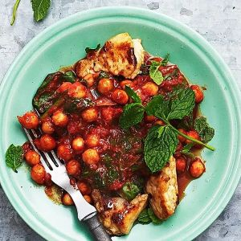

PowerPlant
Crispy Halloumi- och Kikärtsgryta
Om rätten
En smakrik och krämig halloumigryta med kikärtor, tomat och kryddor.
Halloumin ger rätten en härligt salt smak och krispig yta, medan kikärtorna gör grytan både matig och proteinrik.
Information
| Tillagningstid: Under 30 min | Portioner: 4 | Svårighetsgrad: Enkel |
Ingredienser
|
 |
Tillagning
|
Näringsvärde per portion
|